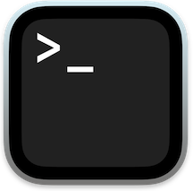

CLI fundamentals
Open a terminal, learn the anatomy of a command, and work with files and directories using core Unix commands.
Overview
This tutorial introduces the . You will learn how to open a , understand the structure of a , and run a core set of commands for creating, viewing, copying, moving, and deleting files. By the end you will also install , a that you will use throughout the workgroup.

Prerequisites: None
What is the CLI?
The command-line interface (CLI) is a text-based way to interact with your computer. Instead of clicking on icons and menus, you type commands to perform tasks. The CLI is powerful and efficient, allowing you to automate workflows, manage files, and run programs with precision.
Depending on your operating system, you might use different terminal applications:
- macOS/Linux: Terminal (default), iTerm2, or other terminal emulators
- Windows: Command Prompt (default), PowerShell, or Windows Terminal
Once you open a terminal, you will see a prompt where you can type commands. The CLI uses a (like , , or PowerShell) to interpret your commands and execute them. By default on macOS, the shell is Zsh, while on Windows, it is Command Prompt. Many Windows users also install Windows Subsystem for Linux () to access a Linux-like environment with Bash.
For most intents and purposes, Zsh and Bash are very similar, and the commands you will learn in this tutorial work in either shell. For the purposes of this workgroup, it is recommended for Windows users to install/enable WSL and use Ubuntu Linux, as it provides a fully functional Linux system with Bash as the default shell. This will provide a more consistent experience with the tutorials and workgroup sessions.
Opening a terminal
macOS
- Open Spotlight Search (Cmd + Space)
- Type “Terminal” and press Enter
Windows (with WSL Ubuntu)
- Open the Start menu (Windows key)
- Type “Ubuntu” and press Enter
You should see a window with a blinking cursor next to a prompt that looks something like this:
jane@macbook ~ %The prompt shows your username, your computer’s name, and your current directory. The % (Zsh) or $ (Bash) at the end is the shell’s way of saying “I’m ready for a command.”
Anatomy of a command
Before running commands, it helps to know what they look like. Every command follows the same general pattern:
command [options] [arguments]- Command — the program to run (e.g.
ls,mkdir,rm) - Options (also called ) — modify the command’s behavior. Short flags start with a single dash and a letter (
-l); long flags start with two dashes and a word (--long). You can usually combine short flags:-lais the same as-l -a. - Arguments () — the thing(s) the command acts on, usually a file name or directory path
Not every command needs options or arguments. Some commands work fine on their own:
pwdOthers accept options that change the output:
ls -lAnd many take both options and arguments:
ls -la DocumentsHere ls is the command, -la combines two flags (-l for long format and -a for all files including hidden ones), and Documents is the argument telling ls which directory to list.
When you see square brackets in documentation — like [options] — they mean that part is optional. You do not type the brackets themselves.
Your first commands
Where am I? (pwd)
pwd stands for “print working directory.” It shows you the full path to the directory you are currently in.
pwd/Users/janeThis tells you that you are in the user jane’s home directory. You will always be somewhere in the filesystem, and pwd tells you exactly where.
What is here? (ls)
ls lists the files and directories in your current location.
lsDesktop Documents Downloads PicturesAdd the -l flag for more detail (permissions, size, date):
ls -lOr combine flags to see hidden files too:
ls -laCreating directories (mkdir)
mkdir creates a new directory.
mkdir my_folderVerify it was created:
lsMoving around (cd)
cd changes your current directory.
cd my_folderConfirm where you are now:
pwd/Users/jane/my_folderTo go back up one level to the parent directory:
cd ..We will cover paths, special symbols like .. and ~, and navigation in depth in the Working with the filesystem tutorial.
Creating files (touch)
touch creates an empty file (or updates the timestamp of an existing file).
touch my_file.txtlsmy_file.txtWriting to a file (echo with >)
echo prints text to the terminal. Combined with >, it writes that text into a file:
echo "Hello from the CLI" > my_file.txtThe > operator redirects the output of a command into a file. If the file already exists, > overwrites it. To append instead, use >>:
echo "A second line" >> my_file.txtViewing file contents (cat and less)
cat prints the entire contents of a file to the terminal:
cat my_file.txtHello from the CLI
A second lineFor longer files, less is better — it opens the file in a scrollable viewer:
less my_file.txtInside less, use the arrow keys or Page Up / Page Down to scroll. Press q to quit and return to the prompt.
cat gets its name from “concatenate” — it can combine multiple files: cat file1.txt file2.txt. But its most common use is simply viewing a single file.
Copying files (cp)
cp copies a file (or directory) from one location to another:
cp my_file.txt my_copy.txtlsmy_copy.txt my_file.txtNow both files exist. To copy an entire directory and its contents, add the -r (recursive) flag:
cp -r my_folder my_folder_backupRenaming and moving files (mv)
mv moves a file to a new location. If the destination is in the same directory, it effectively renames the file:
mv my_copy.txt renamed_file.txtlsmy_file.txt renamed_file.txtYou can also use mv to move files between directories:
mv renamed_file.txt my_folder/Deleting files and directories (rm)
rm removes a file permanently:
rm my_file.txtTo remove a directory and everything inside it, add the -r flag:
rm -r my_folderrm is permanent. There is no trash can, no undo. Double-check what you are deleting before pressing Enter. The -i flag makes rm ask for confirmation before each deletion: rm -i file.txt.
Getting help
Manual pages (man)
Most commands have a built-in manual that you can access with man:
man lsThis opens a detailed reference for the ls command, including all its flags and options. Manual pages can be dense, but they are the authoritative source. Press q to exit.
The --help flag
Many commands also accept a --help flag that prints a shorter usage summary:
mkdir --helpOnce you install additional packages via Homebrew, you can also install tldr — a community-maintained collection of simplified help pages with practical examples. We will set that up in the Shell configuration tutorial.
Installing Homebrew
A automates installing, updating, and removing software. Instead of downloading installers from the web and clicking through wizards, you run a single command and the package manager handles everything.
is the most widely used package manager on macOS, and it also works on Linux (including WSL). You will use it throughout the workgroup to install developer tools, enhanced terminal utilities, and applications.
Prerequisites
macOS — install Apple’s command-line developer tools:
xcode-select --installWindows (WSL Ubuntu) — install build tools:
sudo apt update && sudo apt upgrade
sudo apt install build-essential -yBoth commands require your password, since they install system-level software.
Install Homebrew
Run the official installer:
/bin/bash -c "$(curl -fsSL https://raw.githubusercontent.com/Homebrew/install/HEAD/install.sh)"Always be cautious when running commands that download and execute scripts from the internet. Make sure you trust the source and understand what the script does. Homebrew is widely used and maintained by a large open-source community — the workgroup can vouch for its safety. If you have any questions about running a command, ask a workgroup member.
Verify the installation
After the installation finishes, confirm it worked:
brew --versionYou should see something like Homebrew 4.x.x. If the brew command is not found, the installer may have printed instructions for adding Homebrew to your PATH — follow those prompts, then open a new terminal window and try again.
We will cover what is and how to configure it in the Shell configuration tutorial. For now, just follow any instructions the Homebrew installer provides.
Install your first package
Try installing tree, a command that visualizes directory structures:
brew install treetree -L 1.
├── Desktop
├── Documents
├── Downloads
└── PicturesWe will use brew extensively in the Shell configuration tutorial to install and configure a full set of recommended tools.
Learning more
There are many resources available that document core commands and their usage:
Summary
Here is a reference table of the commands covered in this tutorial:
| Command | What it does | Example |
|---|---|---|
pwd |
Print current directory | pwd |
ls |
List files and directories | ls -la |
cd |
Change directory | cd Documents |
mkdir |
Create a directory | mkdir my_folder |
touch |
Create an empty file | touch notes.txt |
echo |
Print text (with > to write to file) |
echo "hi" > file.txt |
cat |
Display file contents | cat notes.txt |
less |
View file in scrollable reader | less notes.txt |
cp |
Copy files or directories | cp file.txt copy.txt |
mv |
Move or rename files | mv old.txt new.txt |
rm |
Delete files or directories | rm -r old_folder |
man |
Open manual page | man ls |
clear |
Clear the terminal screen | clear |
history |
Show command history | history |
brew |
Install packages via Homebrew | brew install tree |
Next tutorial: Working with the filesystem